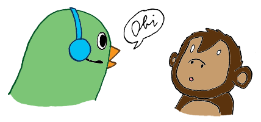
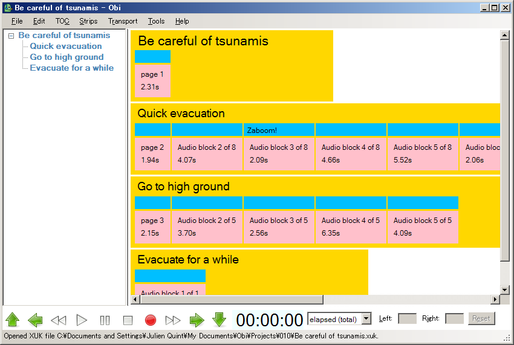
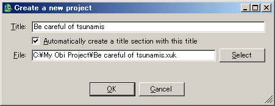
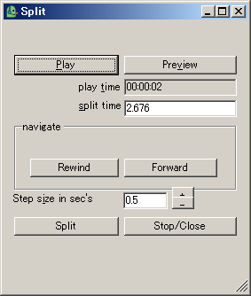
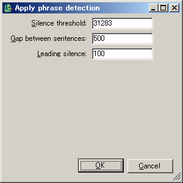
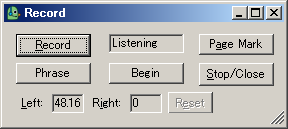
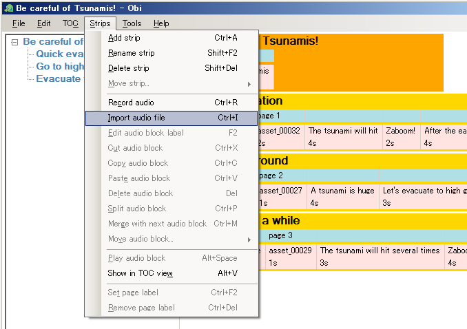
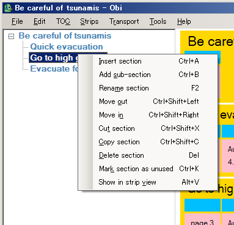
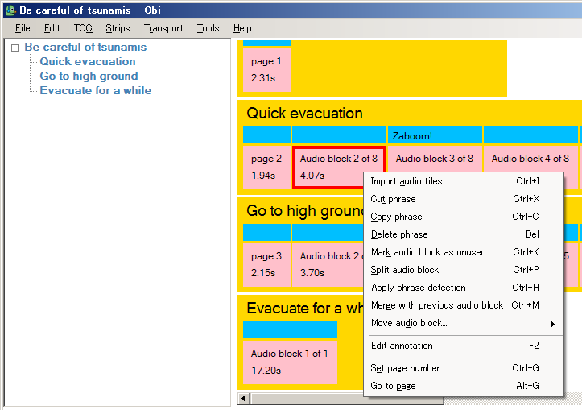

This is the user manual for Obi v0.8.4.0 (4th April 2007)
Obi User Manual version 0.8.4.0

This is the manual for Obi v0.8.4.0 (4th April 2007)
Table of contents
What is Obi?
Obi is a free software DAISY/NISO Digital Talking Book (DTB) production tool.
Free to use, internationalized, accessible; audio-only; DAISY 3 export, etc.
Obi is being developed as part of the Urakawa project, where tools are developed to help developers build accessible multimedia applications. Please visit the Urakawa project website to find out more.
The work area
The image below shows the work area of Obi when a project is open. It consists of three parts: on the left-hand side is the table of contents view, or TOC view for short, where the table of contents for the project is shown; on the right-hand size is the strips view where the actual contents of the book are edited; and on the bottom is the transport bar that controls playback, recording and navigation of the audio in the project.

The table of contents view
Using the TOC view you can navigate in the major structural elements of the project. Typically, this means that you move your current position to a certain section (or chapter if you will) of the DAISY DTB being recorded.
The TOC View is a tree, which means that a section (a node in the tree) can have children. In DTB terminology, this feature is used to describe that a certain section is a sub-section (or a child) of another section.
The TOC View also allows section editing, such as adding and removing sections.
The strips view
The strips view contains strips. A strip represents a section in the DTB. This also means that each strip in the strips view corresponds to one section in the TOC view.
The strips view provides a more detailed view of the project. Here, you can navigate not only between the major sections of the book, but also at a much more detailed level, namely among the blocks that are contained within each strip. We will learn more about blocks later.
The transport bar
The transport bar is used to playback the contents of the project and to record new audio. It has controls similar to those found on hardware or software audio players and recorders such as play, pause, stop, record, fast forward and rewind as well as more specific navigation options such as next phrase or previous section. The transport bar also displays time information and a text-version of the VU meter which can be picked up by screen readers.
Authoring in Obi
Without further ado, let's see how to use Obi to author a new project or complete a project in progress.
Creating and opening projects
A project in Obi contains all of the audio data and structure information necesary to create a DAISY/NISO books. When you start Obi for the first time, no project will be open, so you will need to create a new project, or open an existing one.
Creating a new project
To create a new project, select New project
from the File
menu, or press Ctrl+N. A dialog will appear as shown below:

- Title
- The title of your project.
- Automatically create a title section with this title
- If you check this option, then the project will be created with a top-level section with this title. Otherwise, a completely empty project will be created.
- File
- The location on your hard drive where your project will be saved. You can type in a location or click on the
Select
button to bring the file browser and select a location.
Can someone do another screenshot for this with actual backslash characters instead of Yen signs? Also change "My Obi Project" to "My Obi Projects" while we're at it.
Obird suggestion
Are you wondering what a XUK file is? I suggest that you read about the XUK File format in the glossary!
Opening an existing project
To open an existing project that was created previously with Obi, select Open project
in the File
menu, or press Ctrl+O. You will be presented with the familiar Windows file browser where you can select a .xuk Obi project file.
Obi remembers the projects that you have previously worked on, so you can also select Open recent project
in the File
menu to choose from a list of the projects recently opened.
Finally, Obi can be set to start automatically with the last open project; see Setting your preferences below.
Editing the table of contents
Explain sections, subsections. Deep edits: changes made to a section are made to all subsections. No audio in this part, audio sync is done in strips view.
Creating sections
Create a sibling section (Insert section Ctrl+A) before the selection, at the same level, and at the end, if no selection. Create a subsection as last child of the selected section. Unnamed sections when created.
Renaming a section
To modify the name of a section, select a section in the TOC view and choose Rename section
in the TOC
menu, or press F2. The label for the section will be selected and you can edit it. You can also simply click on the label of the section that you want to edit until the label gets selected.
Changing the level of a section
Move in and move out. Why cannot move in. Why cannot move out.
Cut, copy, paste and delete
The familiar editing operations are available when you are working in the TOC panel (i.e., when a section is selected in the TOC panel) from the Edit
menu. All edits are deep, so that they affect not only the section that was selected, but all of its subsections as well.
Cut section (Ctrl+X)
The selected section is removed from the project and stored in the clipboard to be pasted later.
Copy section (Ctrl+C)
The selected section is stored in the clipboard to be pasted later.
Paste section (Ctrl+V)
When the clipboard contains a section (which was previously cut or copied), it can be pasted as a child of the selected section, along with all of its contents (subsections and recorded audio.)
Delete section (Del)
The selected section is deleted from the project.
Used and unused sections
While editing your project, you may want to keep some parts that are not ready or necessary for the final book but may still come handy later on. You can then mark some parts of the project as being unused, so that these parts will not be exported or played back. To mark a selected section as being unused, choose Mark section as unused
in the TOC
menu, or press Ctrl+K. The section will be grayed-out to show its status.
Similarly, you can turn a selected unused section back to used status again by choosing Mark section as used
in the TOC
menu, or pressing Ctrl+K.
Editing the audio contents: section strips
Strips introduction. Correspond to one section (but not subsections!) Has content in the form of audio blocks.
Creating strips
To add a new strip to the strips view, choose Insert strip
in the Strips
menu, or press Ctrl+A. A new strip will be inserted before, and at the same level as, the selected strip, or at the top level and at the end of the project is no strip selected.
The new strip has a default title that can be edited straight away. Press enter to validate the title, or escape if you do not want to change it.
Renaming a strip
BTW we should explain selection somewhere. Selecting in strip view or TOC view, audio block or strip.
To rename a selected strip, choose Rename strip
in the Strips
menu, or press F2. The strip title (which corresponds to the section title) can be edited. Press enter to validate the new name or escape to cancel.
Cut, copy, paste and delete
Shallow operations only on the selected strip. Explain releveling of sections when changes happen.
Cut strip (Ctrl+X)
The selected strip is removed from the project and stored in the clipboard to be pasted later.
Copy strip (Ctrl+C)
The selected strip is stored in the clipboard to be pasted later.
Paste strip (Ctrl+V)
When the clipboard contains a strip (which was previously cut or copied), it can be pasted as the first child of the section corresponding to the selected strip. When the clipboard contains a section with subsections, all of the subsections are pasted as strips as well.
Reword this and check that this is correct behavior
Delete strip (Del)
The selected strip is deleted from the project.
Editing the audio contents: audio blocks
Audio blocks inside strips.
Importing audio
The first way to add content is to import existing audio files to your project. Obi supports only uncompressed RIFF/WAVE files, which are usually named .wav.
To import audio, select a strip or an audio block, then choose Import audio files
from the Strips
menu. This will bring up the Windows file chooser where you can choose one or more files to import. A new audio block will be created for every audio file that you import.
If a strip was selected, the new audio blocks are added at the end of the strip. If an audio block was selected, the new audio blocks are added before the selected block. The first of the new blocks is selected so that they can easily be listened to for verification.
Obird suggestion
Of course you can also record your own audio directly from Obi! Have a look in the Record section to learn more.
BTW, it would be nice to have before/after screenshots for all these...
Splitting and merging audio blocks
Splitting and merging are the two most useful operations for fine audio editing as they will let you change the contents of the audio blocks in the project.
Splitting an audio block
An audio block can be split into two audio blocks by selecting a time in the audio of the block at which the separation should occur. This can be used to separate several phrases that were part of a single audio files or were not correctly separated.
Basically write the description of the dialog. Also, update the screen shot when the dialog is cleaned-up...

Quick-split
Quick-split works like split, except that it happens on the fly while audio is playing. When playback is in progress, select Quick split audio block
from the Strips
menu, or press Ctrl+Shift+P. The currently playing block will be split at the time when the command was issued, and playback will continue.
Merging two audio blocks
Merging two audio blocks simply merge the audio contained in two consecutive blocks into a single block, so that two phrases become just one. This is useful if a phrase was mistakenly split in two, or if a split was done at an incorrect time.
To merge two audio blocks, select a block that follows another block, then choose Merge with previous audio block
from the Strips
menu, or press Ctrl+M. The selected block and the one before will be merged.
Phrase detection
Phrase detection: detect silence between phrases of a certain length below a certain amplitude threshold. Leave leading silence before every sentence. Need a silence phrase (currently must be the first one in the whole project) of a few seconds of ambient noise. Dialog takes time to appear as level must be computed first, then splitting takes time if long asset to split.

Cut, copy, paste, delete and move
Cut audio block (Ctrl+X)
The selected audio block is removed from the project and stored in the clipboard to be pasted later.
Copy audio block (Ctrl+C)
The selected audio block is stored in the clipboard to be pasted later.
Paste audio block (Ctrl+V)
When the clipboard contains an audio block (which was previously cut or copied), it can be pasted in at the end of the selected strip, or before the selected audio block.
Delete audio block (Del, the delete key)
The selected audio block is deleted from the project.
Move audio blocks (Ctrl+Shift+Left arrow key, Ctrl+Shift+Right arrow key)
Audio blocks can be quickly moved inside their strip using two move commands, for moving them forward and backward. A block cannot move to a different strip in this way; it has to be cut and then pasted.
Used and unused audio blocks
We have seen how to mark sections as being unused, now you can do the same for audio blocks. To mark a selected audio block as being unused, choose Mark audio block as unused
in the Strips
menu, or press Ctrl+K. The block will turn gray to show its status. The block will not play when playing back the contents of the book, and will not be exported to DAISY.
Similarly, you can turn a selected unused audio block back to used status again by choosing Mark audio block as used
in the Strips
menu, or pressing Ctrl+K.
Page numbers
Page numbers can be set on any audio block. Obi manages page numbers automatically; if you add a page number mark to an audio block in your project, page numbering will be updated so that the page numbers are in the sequence of the audio blocks in the project, starting from page number 1. Future versions of Obi will give more control about page numbering.
To set a page number mark on a selected audio block, choose Set page number
in the Strips
menu, or press Ctrl+G. The audio block will then show a page number.
To remove a page number from a selected audio block, choose Remove page number
in the Strips
menu, or press Ctrl+Del (the delete key.) The page number will disappear from the block.
When your project has page numbers, you can quickly move to any block with a page number using Go to page
from the Strips
menu, or pressing Alt+G. You will be presented with a list of all the pages in your book; if you select one, the selection will move to the corresponding audio block.
Add screenshot of the goto page dialog
Annotations
Annotations are small text notes that are used only by Obi and are not exported to DAISY. These can be used for any purpose, for instance for marking parts that still need to be edited. Annotations are represented by annotation blocks similar to audio blocks but they cannot be selected; all operations on annotations are done by selecting the audio block that under the annotation.
To edit the annotation for a selected audio block, choose Edit annotation
from the Strips
menu, or press F2. You can then edit the annotation by typing directly in the text field; press return to when you are finished or escape to cancel the change.
To remove an annotation on a selected audio block, choose Remove annotation
from the Strips
menu, or press Ctrl+Del (the delete key.) You can also edit the annotation and clear all the text.
Because annotations are not selectable, an option is given for user of assistive technologies such as screen readers to force the focus on the annotation so that the text can be accessed. To do so, choose Focus on annotation
from the Strips
menu, or press Alt+Shift+A.
Oops! Using undo
et redo
Describe virtual edits, no changes to files made until saved.
Undo
Undo is a very important command as it allows you to undo the last change that you made. When undo is enabled, the actual menu item will describe exactly what is to be undone, for instance if you delete a section, then the menu item will read undo delete section. Undo will restore your project to the same state that it was in just before you did this action (in this case, the section will be undeleted and restored exactly where it used to be.)
To undo the last operation, choose Undo
from the Edit
menu, or press Ctrl+Z.
Obi will remember all the changes that you have made since you last saved (or since you created) your project, so that undoing twice will undo the last two commands, and so on. You can then undo every change and your project will be restored to its unmodified state. Remember this shortcut, it is very handy!
Redo
If you have undone a command, you can redo it. Obi will also remember the commands that you have undone so that you can recreate all changes that you have made. Be careful however; once you make a new change to the project, all the undone commands are discarded so you won't be able to redo them anymore (this is because your project is now in a different state that it was before you made that change, and therefore the context of undone commands may be inconsistent.)
To redo the last undone operation, choose Redo
from the Edit
menu, or press Ctrl+Y.
Audio playback, recording and navigation
Obi is audio playback and recording tool and has basic playback, recording and navigation features that you can use when editing your project, but also to listen to a completed or in-progress project to test what the final result will sound like to your future readers.
Playback
Play (Space)
 To start playing the audio in the project, press the play button in the transport bar or press the spacebar. If nothing is selected, playback will start from the beginning. If a section or a strip is selected, it will start from the first audio block in the selected section or strip. If an audio block is selected, it will start from this audio block.
To start playing the audio in the project, press the play button in the transport bar or press the spacebar. If nothing is selected, playback will start from the beginning. If a section or a strip is selected, it will start from the first audio block in the selected section or strip. If an audio block is selected, it will start from this audio block.
All audio blocks will be played in the order of the project until the last block has played, or until interrupted. Every time playback moves to a new block, the currently playing block is selected. Unused sections and audio blocks will be skipped.
You can also play a single block, or a single strip, including unused blocks, by choosing Play selection
in the Transport
menu, or pressing Ctrl+Shift+Space. You can also do the same by double-clicking a block or a strip.
Most editing operations are disabled while playing audio; an exception being quick-split so that splitting long blocks can be easily done on-the-fly. To make an edit at the currently playing point in the project, please pause first (see below.)
Pause (Alt+Shift+Space)
 Playback can be paused at anytime by pressing the pause button. The audio block that was currently playing stays selected, so that it serves as context for editing. When an edit is done while paused, playback will generally stop (see below.)
Playback can be paused at anytime by pressing the pause button. The audio block that was currently playing stays selected, so that it serves as context for editing. When an edit is done while paused, playback will generally stop (see below.)
Stop (Esc, the escape key)
 To stop playback, press the stop button. The selection is restored to what it was before playback started. If you stop when not playing, any selected object gets deselected.
To stop playback, press the stop button. The selection is restored to what it was before playback started. If you stop when not playing, any selected object gets deselected.
Record
 New audio can be recorded by Obi. To record new audio, first select an audio block before which to record (new audio blocks will be created before the selected block), or a strip at the end of which to record (new audio blocks will be created at the end of the selected strip.) If no selection is made before recording, a new section will be created automatically.
New audio can be recorded by Obi. To record new audio, first select an audio block before which to record (new audio blocks will be created before the selected block), or a strip at the end of which to record (new audio blocks will be created at the end of the selected strip.) If no selection is made before recording, a new section will be created automatically.
Once the selection is made, press the record button, or Ctrl+R. This will bring up the record dialog shown below:

Describe the dialog. Start listening, press record to record. Create a new phrase with phrase button, new page with page. Explain VU meter too btw.
Navigating through phrases

 You can move from phrase to phrase in the book, i.e. from audio block to audio block, using the
You can move from phrase to phrase in the book, i.e. from audio block to audio block, using the previous phrase
and next phrase
buttons in the transport bar, or the left and right arrow keys.
Moving backward to beginning of current block vs. previous block. Start when stopped, but not when paused?
Navigating through sections

 You can move from section to section in the book, i.e. from strip to strip, using the
You can move from section to section in the book, i.e. from strip to strip, using the previous section
and next section
buttons in the transport bar, or the up and down arrow keys.
Moving backward to beginning of current block vs. previous block. Start when stopped, but not when paused?
Navigating through time

 You can playback faster both forward and backward to navigate through long audio blocks using the fast forward and rewind buttons. When clicked, these buttons will increase and change the direction of the playback speed. To go back to normal playback, press pause or play.
You can playback faster both forward and backward to navigate through long audio blocks using the fast forward and rewind buttons. When clicked, these buttons will increase and change the direction of the playback speed. To go back to normal playback, press pause or play.
Saving
Setting your preferences
Let's do a little bit of bookkeeping first. Because DAISY books are usually meant to be part of a larger library of books, it is important to add some metadata, that is information about the book, so that it can be found later on.
Setting Preferences
The first thing to do before starting a new project, is to make sure that the system and project preferences are in order. Most important
is the configuration of the Audio device on your computer.
- Open Audio preferences and make sure the correct input and output device is selected
- Adjust the input and output volume using the Windows mixer
Create a New Project
Record and Edit the Project
Recording
Once the new project has been created, you can start the recording process.
Select the Add section item in the TOC menu, and type the name of this section.
At this point, a new section has appeared in the TOC View, and a strip occurs in the Strip View.
Move to this section in the Strip View (by clicking on the strip in question, by tabbing to it, or be selecting the Show in Strip View menu item in the TOC menu.
Once the strip is selected, open the record dialog by selecting the Record audio menu item in the Strip menu.
The recording dialog is now listening to the audio input device. Once you press the Record button, recording will commence. Use the phrase marker button to create audio blocks during the recording.
Obird suggestion
All Obi functions and features have keyboard shortcuts! Learn more about them in the Keyboard shortcut table!
Importing audio
Besides recording live audio from your audio input device, you can also import existing audio files into a strip. Select the import audio file menu item in the Strip menu.

Section editing
Using either the TOC View or the Strip View, you can perform section level editing operations, such as add, cut, copy, delete, rename and move.
Read more about section editing in the details section.

Audio Block editing
Audio block editing is typically done after you have recorded some audio for a section. As an example, there may be a slight noise in the recording that you want to remove.
Or there may be an audio block that you want to split, or merge. Read more about audio block editing in the details section.

Save the Project
Once the recording session has finished, select the save project menu item from the file menu.
Obird suggestion
Saving your project at regular intervals during a long recording session is a good idea!
Note: the save project as command makes
a new copy of your project and audio files. When you select this command,
the project in its current state is saved in a different location and/or
under a different name, but you are still editing the same project. You
may think of this as a backup command.
Obi Windows - details
Main Window - TOC View
Section editing
- Add section
- Adds a new section following the section that is currently selected.
- Add sub-section
- Adds a new section as a child of the section that is currently selected.
- Cut section
- Cuts the currently selected section and puts it in the clipboard.
- Copy section
- Copies the currently selected section and puts the copy in the clipboard
- Paste section
- Pastes a section currently in the clipboard, following the section that is currently selected.
- Delete section
- Deletes the currently selected section.
- Rename section
- Enables renaming of the currently selected section. After invoking rename, type the new name.
- Move section up/down
- Moves the currently selected section up or down in relation to its sibling sections. This feature is used to reorder the main structural units (chapters) of the DTB.
- Move section in/out
- Changes the depth of the currently selected section. "Move in" effectively means "make sub-section".
Other functions in TOC View
- Show in Strip View
- Moves the cursor (and focus) to the strip in the strip view that corresponds to the currently selected section in the TOC View.
Main Window - Strip View
Strip editing
- Add strip
- Adds a new strip following the strip that is currently selected.
- Rename strip
- Enables renaming of the currently selected strip. After invoking rename, type the new name.
- Delete strip
- Deletes the currently selected strip.
- Move strip up/down
- Moves the currently selected strip up or down in relation to its sibling strips. This feature is used to reorder the main structural units (chapters) of the DTB.
Block editing
- Edit audio block label
- Edit the textual label of the currently selected audio block.
- Delete audio block
- Delete the currently selected audio block.
- Split audio block
- Opens the split dialog.
- Merge with next audio block
- Merges the currently selected audio block with the audio block that follows it. The result is that two audio blocks turns into one.
- Move audio block forward/backward
- Moves the currently selected audio block in relation to its sibling blocks. This will reorder the sequence of audio blocks within a strip.
- Cut audio block
- Cuts the currently selected audio block and puts it in the clipboard.
- Copy audio block
- Copies the currently selected audio block and puts the copy in the clipboard.
- Paste audio block
- Pastes an audio block currently in the clipboard, following the audio block that is currently selected.
Other functions in strip view
- Record audio
- Opens the recording dialog
- Import audio
- Opens the import audio dialog.
- Play audio block
- Opens the play dialog, and plays the currently selected audio block.
- Show in TOC View
- Moves the cursor (and focus) to the section in the TOC View that corresponds to the currently selected strip in the Strip View.
- Set page label
- A page label usually indicates a page number that can be inserted just
like in a print book. This is useful to include if you record a book that
exists in print. The page label appears on top of the audio block which
is usually the audio counterpart to the label.
- Remove page label
- Removes page label that was previously set.
Record Dialog
As the record dialog opens, Obi is already listening to the input device.
- Record
- Start the recording.
- Stop
- Stop the recording and close the dialog.
- Phrase marker
- Create a new Audio Block. This feature can be used during recording (i.e. without pressing stop.)
Play Dialog
When the play dialog opens, playback will start automatically.
- pause/play
- Pauses the playback, and rests at the current position. Pressing the same button again will resume playback.
- stop
- Stops playback and closes the play dialog.
Split Dialog
The split dialog is used to split one audio block into two.
- preview
- Listen to the audio that follows the current split position.
- back
- Go back to the current split position, and play from that position
- play/pause
- Play the entire audio block.
- fast rewind
- Move backward in time a large step.
- fast forward
- Move forward in time a large step.
- fine rewind
- Move backward in time a small step.
- fine forward
- Move forward in time a small step.
- current time
- Displays the current time position in the audio block.
- split time
- Displays the split time position in the audio block.
- split
- Performs the split operation and exits the dialog.
- stop
- Cancels the split operation and exists the dialog.
Preferences Dialog
The preferences dialog contains various settings relating to the project and the system. Obi will remember these settings between session, in other words, when you restart Obi or your computer, these settings will remain as you left them.
Audio Preferences
The audio preferences tab allows to view and modify settings relating to audio recording and audio playback.
Audio Preferences fields
- Input device name
- Set the audio device to use for recording. This is the same as selecting a soundcard input port.
- Output device name
- Set the audio device to use for playback. This is the same as selecting a soundcard output port.
- Default sample rate
- Select the sample rate to use for recording. This field defaults to
44100, and normally, you can leave it at that. Under some circumstances (such as a very large book being recorded) you may want to change this setting to 22050.
- Default channels
- Select whether you want to record in
mono (one channel of audio) or stereo (two channels of audio). Normally, DAISY DTBs are recorded in mono.

Obird suggestion
Changing sample rate and number of channels in the middle of a project is not a very good idea!
Try to make your choice before you start recording in the project! Then try to stick to your choice!
Project Preferences
The project preferences tab allows to view and modify settings relating to an Obi project.
Project preferences fields
- Project identifier template
- Obi can autogenerate an identifier for your project. In this field, you can determine how the identifier should be generated.
You can add any characters that will occur everytime an identifier is generated, and combine these with a number of hash characters (#) that Obi will replace with numerals.
For example, if this field is set to obi_####, Obi will generate an identifier such as obi_9682.
- Default projects directory
- Select a directory on your computers harddrive that Obi will suggest as a project directory when you start a new project.

User Profile Dialog
User profile fields
- Full name
- Name of user.
- Organisation
- Organisation of the user.
- Language
- The language of the user (which is not necessarily the same as the language of the DTB being recorded!)

Glossary of Terms
Obird suggestion
If the word you are looking for does not exist in this glossary, I suggest that you have a look in the DAISY Knowledge Network.
- Audio Block
-
A term used in Obi to describe segments of audio. See also Block and Phrase.
- Block
-
A term used in Obi to describe the smallest content unit of the DTB being produced.
A block can for example be an Audio Block, in which case it is equivalent to a phrase.
Blocks are organised in Strips.
- DAISY
-
An acronym that stands for Digital Accessible Information SYstem.
Read more at the daisy.org introduction area.
- DAISY/NISO
-
A name used to describe the type of DTB produced by Obi, in other words, the particular standard specification used.
Read more at daisy.org standards area and the daisy.org introduction area.
- DTB
-
An acronym that stands for Digital Talking Book.
Read more at the daisy.org introduction area.
- Obird
- Obird is the Obi mascot. The Obird logo consists of a picture of Obird's green head, where she is wearing a headset with a microphone. Although Obird is a Parakeet, she can narrate very well.
- Phrase
-
A term used to describe a small segment of audio within a DAISY DTB.
A phrase is typically equivalent to a spoken sentence, or a part of a spoken sentence.
In Obi, a phrase is equivalent to an Audio Block.
- Section
-
A structural unit in the DTB being produced.
A section typically corresponds to a book chapter.
In Obi, sections are displayed and edited in the TOC View and in the Strip View.
- Strip
- A concept used in Obi to display the contents of a DTB section. Strips occur in the Strip View of the Obi main window.
- XUK File Format
- XUK is an acronym that stands for XML for Urakawa. This is a file format used while the DTB is under production. When you save the project, by default a XUK file is created. Once the DTB is ready for publishing, the XUK file format is converted into a DTB. Note that the XUK file is only the description of the project; all audio data is contained in a separate directory.
Keyboard Shortcut Table
How keyboard shortcut syntax works
In the table below, all keyboard shortcuts of Obi are described using a standard syntax.
The key components of this syntax are:
- Sequences of keys to be pressed are described using the comma sign
- For example, ALT,F means: First press and release the ALT key, then press and release the F key.
- Key combinations (i.e. keys to be pressed simultaneously) are described using the plus sign
- For example, ALT+F means: Press the ALT and F key simultaneously, and then release them.
Note: these shortcuts may change in subsequent versions of
Obi.
| Obi Main Menu |
| File Menu | ALT,F |
| Edit Menu | ALT,E |
| TOC Menu | ALT,C |
| Strips Menu | ALT,S |
| Tools Menu | ALT,T |
| Help Menu | ALT,H |
| File Menu |
| New Project | CTRL+N |
| Open Project | CTRL+O |
| Save Project | CTRL+S |
| Save Project as | CTRL+SHIFT+S |
| Discard Changes | CTRL+D |
| Close Project | CTRL+W |
| Exit | ALT+F4 |
| Dialogs and Windows |
| Open Record Dialog | CTRL+R |
| Open Help | F1 |
| Open Metadata dialog | ALT+M |
| Open Audio Preferences | ALT+A |
| Open Project Preferences | ALT+P |
| Open User Profile Dialog | ALT+U |
| General editing operations |
| Undo | CTRL+Z |
| Redo | CTRL+Y |
| Touch project | CTRL+T |
| Main view |
| Hide TOC View | ALT+T |
| Show TOC View | ALT+T |
| Show in Strip View | ALT+V |
| Show in TOC View | ALT+V |
| Section Editing |
| Add section | CTRL+A |
| Add sub-section | CTRL+B |
| Cut section | CTRL+SHIFT+X |
| Copy section | CTRL+SHIFT+C |
| Paset section | CTRL+SHIFT+V |
| Delete section | DEL |
| Rename section | F2 |
| Move Section Up | CTRL+SHIFT+UP |
| Move Section Down | CTRL+SHIFT+DOWN |
| Move Section In | CTRL+SHIFT+RIGHT |
| Move Section Out | CTRL+SHIFT+LEFT |
| Strip Editing |
| Add strip | CTRL+A |
| Rename strip | SHIFT+F2 |
| Delete strip | SHIFT+DEL |
| Move strip up | CTRL+SHIFT+UP |
| Move strip down | CTRL+SHIFT+DOWN |
| Audio Editing |
| Import audio file | CTRL+I |
| Edit audio block label | F2 |
| Cut audio block | CTRL+X |
| Copy audio block | CTRL+C |
| Paset audio block | CTRL+V |
| Split audio block | CTRL+P |
| Delete audio block | DEL |
| Merge with next audio block | CTRL+M |
| Move audio block forward | CTRL+RIGHT |
| Move audio block backward | CTRL+LEFT |
| Play audio block | ALT+Space |
| Page Labels |
| Set page label | CTRL+F2 |
| Remove page label | CTRL+DEL |


{kind=link}
{kind=link}
{kind=link}
{kind=link}
{kind=link}
{kind=link}
{kind=link}
{kind=link}
{kind=link}